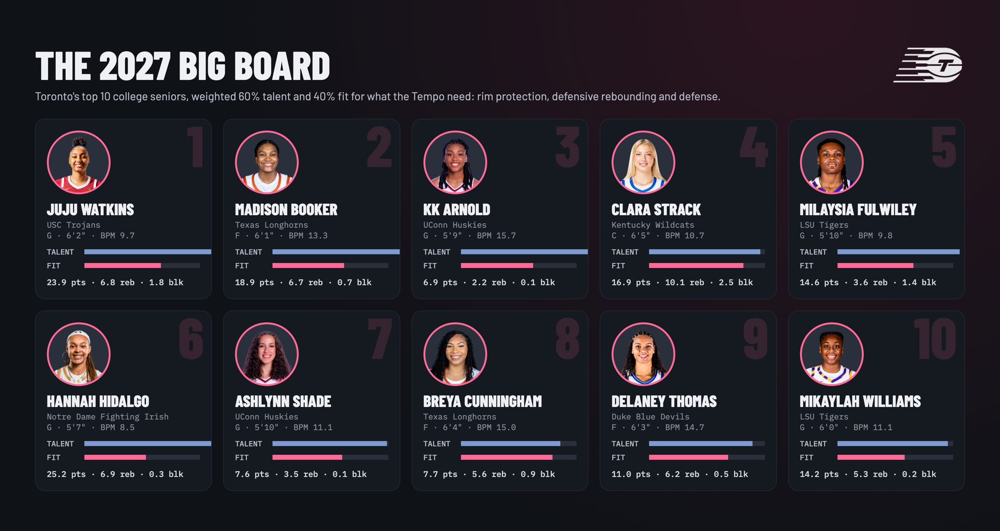

Talent is my model alone, which projects WNBA minutes from college numbers. No mock drafts go in. Fit measures how much a player helps where Toronto was worst: blocks, defensive rebounds, defensive BPM, height and steals. Both are standard scores within this senior class: 50 is average and every 10 points is one standard deviation, so a gap of 20 points is a big gap. Score blends the two using the slider. Click a player to see her full profile.
The top 10 at the default setting (60% talent, 40% fit), as a poster.

Who's eligible: college players whose first season was 2023-24, which makes 2026-27 their senior year, with 400+ minutes in 2025-26. Anyone drafted in 2026 is removed. International prospects and early entrants aren't included, and the 2027 draft order hasn't been set yet.
Talent model: a ridge regression trained on every WNBA draftee from 2018 to 2025. It predicts the square root of WNBA minutes in her first two seasons from her last college season: minutes per game, Game Score per game, BPM, defensive BPM, team strength (her team's average BPM, so stats earned in blowouts count for less), points, rebounds, assists, steals and blocks per 40, true shooting and height. The talent score is this model's projection as a standard score. Fit: the average z-score of blocks/40, defensive rebounds/40, defensive BPM and height, plus half-weight steals/40. College data covers ESPN-tracked games only, and BPM comes from sportsdataverse's player value file.
Validation: leave-one-draft-class-out. For each of 2018–2025, the model is retrained on the other seven classes and scored on the held-out class, so every accuracy number on this page comes from players the model never saw. "Rotation player" means 500+ WNBA minutes in her first two seasons. The limits: about 200 players is a small sample, minutes measure opportunity as well as quality, and the model can't see age, length, athleticism, injuries or strength of schedule.